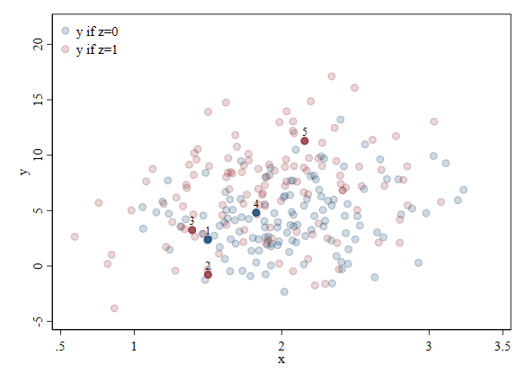
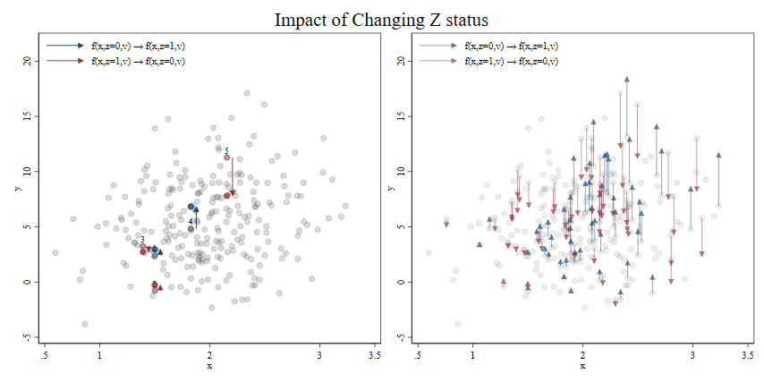
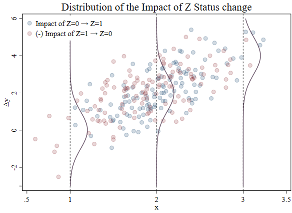
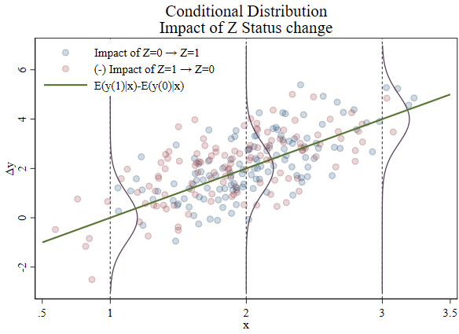
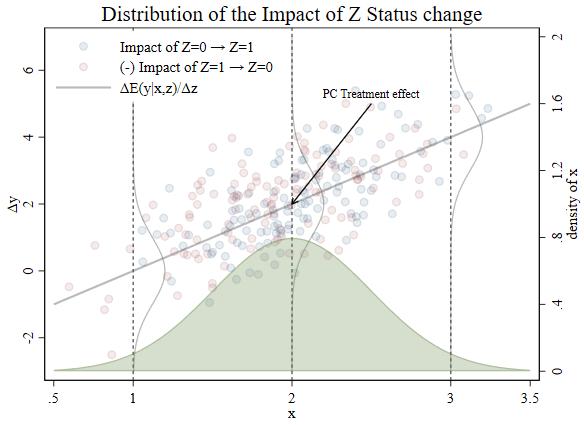
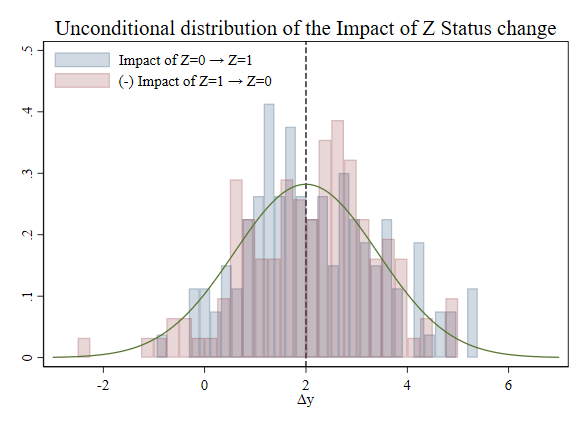
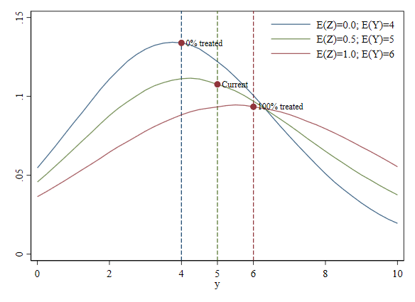

Interpretting Quantile Regressions II
Not quite there yet
Recap
In the previous post on this series of informal presentations about quantile regression, I introduced the ideas of three different types of interpretations one could potentially perform when analyzing coefficients from a not so simple linear regression.
In contrast with the basic linear regression model found in most introductory econometrics textbooks, I started with a functional form that included a quadratic term (nonlinear in variables), and a heteroskedastic error.
In this setup, I described that there were at least three ways of analyzing how changes in the independent variable $X$ could affect the dependent variable $y$:
- Individual effect: This type of effect corresponds to how a particular observation's outcome $y$ is affected by some changes on the exogenous variable $x$ or the unobservables $v$. In the model I used, the effect of $x$ on $y$ depends on itself (because of the functional form), and on the unobservables $v$ (because of the heteroskedasticity). I call the latter unobserved heterogeneity. To some extend, individual effects condition on everything.
- Conditional effect: This type of interpretation arises as a solution to the presence of unobservables, and it is the most common approach presented in textbooks. The solution consists on averaging them out, making use of the "zero conditional mean" assumption we impose on unobserved components. Because we do this, effects are no longer specific to individual observations. Instead, they are the "average" or "expected" effect for all observations with the same characteristics. (or conditional on characteristics). This is one reason why we care so much about the specification of the conditional mean $E(y|X)$. In this case, conditional effects, which compare conditional means, conditions on observables only.
- Unconditional effect: This type of interpretation no longer corresponds to specific observations or groups of observations with the same $X$. They correspond to changes that affect some distributional aspects of the whole population. In this case, we are interested in how the unconditional distribution of $y$ will change (changes in the mean for Linear regressions) if there are changes in the distribution of $X$ (for example changes in the mean or location shift). They do not vary by observables or unobservables, because we average the effects over the whole distribution. In this case, the goal is to analyze what Changes in the (unconditional) mean outcome $y$ only vary if there are changes in the distributions (although we mostly look at means).
From all these interpretations, the one I believe deserves the most attention is the unconditional interpretation, which tends to be misunderstood.
One question that is asked often is, why do we call this "Unconditional effects", if we are indeed conditioning (adding) controls to the model.?
To be clear, all the "interpretations" I suggest are conditional interpretations, but conditioning on different things. Individual effects "condition" on observed and unobserved factors, when comparing outcomes before and after a change in $X$. Standard "conditional effects" averages (or integrates) over unobserved factors, and conditions on specific values of observables. In other words, compares conditional distributions of $y$ before and after changes in $x$. Finally, "unconditional effects" average (or integrate) over observed and unobserved factors, so they do not depend on specific values of observed factors, except for distributions themselves. In other words, one compares the unconditional distribution of $y$ before and after changes in $x$.
There is a second reason why the differences are not well discussed in standard econometric courses. The reason is that when using linear regressions, we are trying to talk about conditional means. This is important because using "mean" functions, we can easily go back and forth (in most cases) and describe changes that are "expected" for individuals (or effect for the average individual), or interpret them as changes in conditional or unconditional distribution of $y$.
What do I mean with that?. Well, let's consider the DGP I had before:
$$I: y_i = a_0 + a_1 * x_i + a_2 * x_i^2 +v_i (b_0 + b_1 * x_i + b_2 * x_i^2) $$
with marginal effects equal to:
$$Imfx: \frac{\partial y_i}{\partial x_i} = a_1 + 2* a_2 * x_i + v_i ( b_1 + 2* b_2 * x_i ) $$
Now, if I want to estimate the effect of $x$ on $y$ abstracting from the unobserved $v$, we could obtain the expected value of the individual marginal effects, or calculate how much the average outcome changes when there is a change in $x$:
$$E \left( \frac{\partial y_i}{\partial x_i} \right) \big|_{x_i=X}= \frac{\partial E(y_i|x_i=X) }{\partial X} = a_1 + 2* a_2 * x_i$$
Mathematically, both expressions are identical. However, in terms of interpretation, they represent two different things. Taking the average of the marginal effects intuitively indicates we are estimating what is the expected marginal effects, for individuals with characteristics X: "If we take an individual at random from the sample, and increase his $X$ in one unit, How much would $y$ is expected to change?".
In the second case, what we are saying is, how would the average outcome $y$ for individuals with $x_i =X$ (conditional mean) will increase if they all experience a one-unit increase in "X". In other words, we are comparing how the conditional distribution will change, but measuring that change using conditional means.
If you are reading my trend of thoughts, you will see that I'm foreshadowing quite strongly the difference between comparing outcomes for individuals, vs comparing distributions. The latter will be quite important to understand what quantile regressions do. But for now, let's return to the topic for today.
A step forward
At the end of the last post I mentioned that before discussing quantile regression interpretation, two more topics needed attention in the framework of LR models: Interpretation of Dummy variables (or Limited dependent variables), and the idea of partial conditional effect (my take on treatment effects). To do this, from the setup/simulation perspective, I'll modify the setup, allowing for two explanatory variables in the model, one of which will be a binary/dummy variable.
Let's start.
Why are Dummy variables so special?
Aren't they just 0's and 1's
I should start by saying it is not my intention to single out this particular type of data. In fact, some of the "problems" associated with Dummy variables are in fact observed across other variable types as well. These are the variables known as "limited distribution" variables. Although, You may be more familiar with the term "limited dependent variables". But, what are they?
Limited distribution variables are those whose distribution are restricted in some way. For example:
- # of children only take positive integers but can include zero.
- Age can be though of as a continuous variable but are always possitive (except at the exact moment of birht?).
- Poverty rate is continuous, but is restricted to be between 0 and 100%.
- And of course, treatment status, or qualitative data in general, are dummy variables that only take values of 0's or 1's. (ignoring for now cathegorical data)
From an econometric analysis perspective, it may be important to know if you have this type of data.
Now, I say "maybe" with a hidden intention. There is plenty of discussions (formal and informal) about the benefits of using simple LR models to analyze dependent variables with limited distributions, once aspects of functional forms and heteroskedasticity are addressed. On the other hand, plenty of econometricians also suggests that it would be efficient if this piece of information (distribution of the dependent variable), is used to model and analyze the data. But that could be left for another time.
On the other hand, if the LDV is used as an explanatory variable, nothing needs to change when estimating the model. Standard OLS estimations are still BLUE. (Assuming all other assumptions hold). So...what changes??
The change is in your mind.!
Plainly said, what is different is the "thought experiment" that you need to consider when thinking about the effects of $x$ on $y$.
Consider the case #of children. A reasonable "thought experiment" for anyone in a sample could be the impact of "one additional child". However, one should not consider the impact of a marginal child (1/1000th of a child?), because that doesn’t exist. What is, perhaps, less intuitive is that the opposite thought experiment of "one less child" does not apply to everyone in the data either, because the number of children cannot be negative.
Similar arguments could be provided when considering the impacts of changes in poverty rate, age, or education. Granted, it is often the case that most of the observations in the data will be in a "reasonable" range, and concerns of a "reasonable thought experiment" may not be as important.
That is not the case with qualitative data captured with dummies, because all data is at the edge of the distribution. People are either treated or untreated, they are Male or Female, Unionized or not unionized. Thus, the thought experient needs to be considered carefully.
How is this relevant? Perhaps the most common variable to consider when talking about dummy variables is one that captures treatment status. In this case, observations in your data will either be treated (=1) or untreated (=0). The thought experiment of measuring the impact of "receiving treatment" is only appropriate for those untreated, whereas the impact of "losing their treatment status" is only appropriate for treated observations. Because of this, rather than considering a "unit change in $Z$", where $Z$ is the treatment variable, I will refer to a change in treatment Status. This will include individuals who go from $Z=1 \rightarrow Z=0$ and $Z=0 \rightarrow Z=1$.
Individual, Conditional and Unconditional effects:Setup
And dont forget partial conditional!
Alright, So let's start with the Data Generating Process (DPG). Let's assume that the outcome y is a function of three factors. A continuous variable $X$, a dummy variable $Z$ and unobservables $v$. For simplicity, I'll call $Z$ a treatment:
$$ y = f(x,z,v) \quad (1)$$
To be able to show make some data, and make life simple...I'll take a step back and assume the outcome $Y$ is linear in both $X$ and $Z$, but that those can interact with each other. And, as before, I'll assume $v$ is homoskedastic, but that interacts with X and Z, which produces an heteroskedastic model:
$$ y = a_0 + a_1 * x + a_2 * z + a_3 * x * z + v (b_0 + b_1 * x + b_2 * z ) \quad (2) $$
And of course, for most of the plots I'll use, I can prepare the data as follows:
. clear
. set seed 1101
. set obs 250
number of observations (_N) was 0, now 250
. gen x = 2+rnormal()/2
. gen z = runiform()>.5
. gen v = rnormal()
. replace x=. if x>5 // Dropping large values for the graph
(0 real changes made)
. replace x=1.5 in 1/2 // but setting two points of interest
(2 real changes made)
. replace z=0 in 1
(0 real changes made)
. replace z=1 in 2
(0 real changes made)
. gen zero=0
. * finally, following the DGP, we have:
. gen y = 2 + 1*x - 2*z + 2*x*z + v * (1+x+z)
. gen id = _n
. two (scatter y x if z==0 , color(navy%20) ) || ///
> (scatter y x if z==1 , color(maroon%20) ) || ///
> (scatter y x in 1/5 if z==0, mlabel(id) mlabcolor(black) mlabpos(12) color(navy%80) ) ///
> (scatter y x in 1/5 if z==1, mlabel(id) mlabcolor(black) mlabpos(12) color(maroon%80) ) , ///
> legend(order(1 "y if z=0" 2 "y if z=1") bplace(nw) position(center) cols(1) region(lstyle(none))) xlabel(0.5 1/3 3.5) ylabel(-5 (5) 22)
To reduce the amount of code to construct the figures), I'll make the code available on a different page.

Individual effect II
As I mentioned before, individual-level effects "conditions" on all observed $(X \quad \& Z)$ and unobserved $v$ characteristics of individuals. Since I already presented some of the differences in interpreting the model for a continuous variable in the last post (see qreg part I), I'll concentrate on the interpretation of Dummy variables only.
Since we have access to the full DGP, it is possible to define the outcome for all individuals under either treatment status. If an observation is treated, its outcome is given by :
$$ y^1_i = a_0 + a_1 * x_i + a_2 + a_3 * x_i + v_i (b_0 + b_1 * x_i + b_2 ) \quad (3a) $$
But if it is untreated, it is given by:
$$ y^0_i = a_0 + a_1 * x_i + v_i (b_0 + b_1 * x_i ) \quad (3b) $$
In the figure above, all Blue points are untreated, and only they could change their status to treated, whereas all Red dots are already treated, and only they could change their status to untreated. Since we are creating the data, and can arbitrarily change "treatment" status for the illustration. For now, I'll ignore this difference, and simply say:
For any observation, the change from moving from $z=0$ to $z=1$, is given by:
$$ \frac{\Delta y_i}{\Delta z_i} = y^1_i - y^0_i = a_2 + a_3 *x_i +v_i * b_2 \quad (4) $$
On this point, it may be important to notice that this individual-level effect of a change in treatment status can also be described using the language of "potential outcomes". And for us, it is possible to obtain this for each observation only because we know the exact DGP.
OK, so now that we know analytically, what are the effects of changes in $x$ or $z$ on the outcome, it may be useful to also see how these changes look in terms of the data we created.

On the figures above, I provide the impact of the treatment status change, and how it affects currently treated and untreated observations. On the right, I show the case of 5 observations, whereas, on the left, you have similar visuals for more observations.
The arrows show the direction where the observation outcome $y$ would go if their treatment status changes. For the case of Blue dots (the untreated), they tend to have an upward-facing arrow because for most of them, becoming treated (change in treatment status) will (by design) increase their outcome.
For the Red dots, however, the arrows tend to point down because they are more likely to lose the benefits of the treatment. However, to simplify the language, the magnitude of the arrows can also be thought of as the gain the red dots obtained for being treated, if we could compare their outcomes to the situation where they were never treated.
Other than this, the results are just like for the continuous variable case.
- The effect of $z$ on $y$ depend on observables $x$.
- But also depend on unobservables $v$.
So what do we get from this...Nothing much compared to last time. Individual-level effects depend on both observables and unobservables. Observables will generate "observable heterogeneity" (if modeled), and unobservables generate unobservable heterogeneity.
To close this point, however, in the figure below I provide plots of how the (distribution) of treatment effects depend on $x$.

In contrast with previous figures, the figure above shows the change in $y$ (measure in the vertical access) that is generated by a change in treatment status $z$. Because the effects also depend on unobservables, the individual effects are represented by the individual "dots". The plots show not only the observed variation in the sample but also the theoretical distribution of those variations (density curves), which are generated due to the unobservables $v$, given the parameters I choose to simulate the data. The same color coding for treated and untreated groups is used as before.
These plots also reflect the same conclusions I had before.
Conditional effect II
Individual-level effects are a useful strategy to "think" about all possible things that could happen to an individual if there is a change in his/her observable characteristics, but is usually impractical and unfeasible. The reason for this is that we do not observe $v$, thus we cannot quantify it.
As mentioned last time, one alternative to "eliminate" this problem is to average the unobserved component $v$ away. The idea is to use the zero conditional mean property $E(v|x,z)=0$, so when we take expectations conditioning on some values for x and z, we can eliminate it from the marginal effects. By doing this, we can obtain feasible estimates for the "expected" or "average" impact of a change in $z$ on $y$. The trade-off is that those effects may not correspond to any specific observation, but to "average" people that have those characteristics (if you prefer thinking about individuals), or to "all" people with those characteristics (if you prefer thinking about distributions).
While I could do this from the Conditional expectation function (apply $E()$ to eq 2), I'll take the easier route, and take conditional expectations for the marginal (treatment effects (eq 4)).
If you like to see this as the expected effect on an individual:
$$ E(y^1_i - y^0_i|X) = a_2 + a_3 *X \quad (5a) $$
Or, if you like to see this as expected effect on conditional distributions:
$$ E(y^1_i|X) - E(y^0_i|X) = a_2 + a_3 *X \quad (5b) $$
To appreciate the implications of this, I'll update my previous plot, and show what I'm calling conditional effects, alongside the individual effects.

The takeaway from the above figure is that by using the conditional expectation, we summarize the individual effect heterogeneity, abstracting from the unobserved components (green line). However, because of how the DGP was designed, we still see heterogeneity across observed characteristics $x$.
Since the simulated data is limited (to 250 obs), I cannot show that the distribution of the effects of changing treatment status for individuals with the same $x$ also has a normal distribution (again by design of the DGP), but I provide the theoretical densities to help make that point.
What is new in this figure is that the conditional "treatment effect" on the treated and untreated vary with $x$. If an individual has an $x=1$, those observations would have an average change in $y$ of zero. If $x=2$, the outcome $y$ would increase in average in 2, if $x=3$, the outcome would increase in 4, so on and so forth.
At this point, as an alternative to plotting all possible effects based on observed heterogeneity (the green line in the above figure), one learns about "Marginal effects at some value of interest", which most of the time are "at means". This approach suggests analyzing effects of the variable of interest (like the treatment $z$), for fixed values of all other characteristics, concentrating only on one portion of the conditional effects (say only for $x=2$).
A second approach, which is the standard option in -margins-, is to report average marginal effects. I suggest, however, that these effects could be better understood as partial conditional effects (Yes, I finally get to this point!).
Partial Conditional effects I
Why? why? why? do we need another one?
I would be surprised if you have heard of this particular concept before (under this name). However, you probably have applied this whenever you use -margins- to estimate average marginal effects, without knowing it, or realizing it. However, you may probably have applied an interpreted as a "conditional effect", whenever you talked about "average marginal effects".
The way I like to think about these "Partial conditional" effects, is to consider it as a bridge between conditional effects (that depend on specific values for all explanatory variables), and unconditional effects (which depend on overall distributions, but are typically confined to "means" of the data). In this sense, the idea of estimating "Partial conditional effects" is to summarize some of the observed heterogeneity the same way we eliminated the unobserved heterogeneity. By taking averages. However, in contrast with "unconditional effects", whenever we explain a particular variable (say $z$), we still need to condition the effect on values for that variable. This is why I call this "partial conditional" because we only "condition" a partial list of variables in the model.
In the current example, this could be the partial conditional effect of the treatment $z$, which averages over the distribution of $x$, or obtain the partial conditional effect of $x$, averaging over all treated and untreated observations.
So how does this affect the estimation of effects?. Starting from equations (5a) and (5b), we can take expectations with respect to variables we are not interested in. For example, when analyzing treatment effects, we would average the conditional effects over $x$, or average the individual effects over $x$:
$$ E(E(y^1_i - y^0_i|X)) = a_2 + a_3 *E(X) \quad (6a) $$
$$ E(E(y^1_i|X)) - E(E(y^0_i|X)) = a_2 + a_3 *E(X) \quad (6b) $$
$$ E(y^1_i - y^0_i) = a_2 + a_3 *E(X) \quad (6c) $$
$$ E(y^1_i) - E(y^0_i) = a_2 + a_3 *E(X) \quad (6d) $$
However, because of the law of iterated expectations, they all would provide the same result but would imply slightly different thought experiments.
For example, the equations (6a and 6c) can be used to make interpretations for the "average" person in the population, and how the treatment affects the outcome on average. Alternatively, equations (6b) and (6d)
could be interpreted as how the average outcome would change if we compare average outcomes assuming everyone is treated or untreated.
When interpreting these differences as changes in distributions, the implicit assumption is that "all values" for "all other variables" for "all individuals" are assumed to be constant, while only changing the variable (or variables) of interest. This may or may not be a reasonable assumption, but in linear models, the implications of doing it are minor. (they get averaged). This is also different from interpreting the results as relevant for the "average" person, where we assume there is an "average" man, whose characteristics are fixed at the means, and the only observed change is the treatment status.
The other aspect to consider is that we now require to know something about the distribution of the explanatory variables. Or, At the very least, know their averages, since the Partial conditional effects, depend on those averages.
Alright, enough "theory", lets see what happens in practice.
In the figure below, along with the size of the treatment effect for the individual (measure on the vertical axis), I'm also plotting the theoretical distribution of $X$, because only with that, we could estimate the expected size of the treatment effect.

Since I designed $X$ to be distributed as normal with mean 2 and standard deviation 1, the effect of treatment will have to be estimated using $E(X)=2$. Thus the partial conditional effect of $Z$ on the outcome, the average across all values of $X$, is equal to 2. This may be more easily observed when plotting the distribution of all individual-level effects, which, based on the design, has an average of 2.

So just one note. I have called this effect a partial conditional effect, because it conditions the effect using specific values for treatment status $z$ (0 and 1). However, because it averages over $X$, it is also unconditional on specific values of $X$, but conditional on the distribution (the mean) of $X$. This is usually described as "Unconditional treatment effect", or as "average treatment effect". However, I will call it "partial conditional effect", to differentiate it from "unconditional effects" that I discuss next.
Unconditional effects II
Following the language and implications I have presented so far, when I refer to "unconditional" effects, I refer to effects that do not condition on any specific values of the explanatory variables, but rather aspects related to the distribution of those variables.
When the model specification has only linear terms, and no interactions, the underlying assumption is that only changes in the mean of the explanatory variables will affect the outcome's mean. When quadratic terms are added, as I showed in the previous post, the outcome's mean may also depend on the variance of explanatory variables, and if interactions are considered, it usually implies that the outcome's mean depends on the covariance. Because of that, and to simplify interpretations, we usually concentrate on changes in $x$ that only affect the mean, but not other aspects of the distribution.
This is certainly not a problem for continuous data, where we can still refer to the thought experiment of a one-unit change in $X$. However, for dummy variables, this is less obvious.
As I described at the beginning, observations in a sample will either be treated or not. There is no in-between. When thinking about unconditional effects, however, we could make a different thought experiment. The change is not on the treatment status of individuals, but a change in the proportion of treated observations (change in $P(z=1)$). I'll probably come back to this again, but the paper that pushed forward "unconditional [partial] effects" (Firpo, Fortin, and Lemieux, 2009) talks explicitly about this thought experiment but spends only two lines explaining the problem.
[Side note:] At the time of writing this, it occurs to me that you could also think about thought experiment as a situation where treatment status is like the Schrödinger's Cat, where we need to assume all observations are treated an untreated at the same time. And the only thing we know to calculate effects, its the probability of being treated. And the treatment status is only assigned when we open the box and quantify the impact.
So what are the implications for the interpretation?.
Consider the DGP that was used to create the sample. Given the DGP design, 50% of the sample is being treated, The expected value of $x$ is 2 ($E(X)=2$), and the current average outcome is 5 $E(y)=5$.
In the previous section, I showed that the partial conditional effect, or unconditional treatment effect, of $z$ on $y$ is equal to $a_2 + a_3 *E(X)$, which given the DPG will be 2. In the current framework of unconditional effects, this would be the equivalent of measuring the changes in the mean of outcome $y$, assuming that we go from no-one being treated (z=0%), to everyone being treated (z=100%).
The problem with this interpretation, and which confuses many applied researchers, is that we currently have 50% of the population treated. So, at best, we could increase the treatment rate by 50 percentage points, which is half of the thought experiment implied by unconditional treatment effects. In other words, the standard estimation of the treatment effect requires rescaling to be sensible based on what we observe in the data. As a matter of fact, when referring to unconditional effects, I suggest being even more cautious and apply an even smaller "change" (perhaps 10pp?), before interpreting the impact of dummy variables (treatments).
but, is this distinction that relevant?.
The truth of the matter is that making this distinction may not be relevant when using Linear regressions, and when the interest falls in analyzing average/expected changes. However, as we will see when talking about quantile regressions, these differences are important when we try to analyze other parts of the distributions (like quantiles).
How does the unconditional effect of a change in the proportion of treated units would look based on the data.
Because we are using a heteroskedastic model, the density function for the outcome $y$ under the current distributional characteristics is difficult to derive (if it even exists), and neither can we derive the distribution functions for different treatment rates (say 0% and 100%).
However, to show you how changes in the outcome affect the distribution, and the mean, I'll simply simulate a larger sample. And plot all the relevant figures using kernel densities (a topic for another time).

This figure plots the densities of 3 possibles scenarios, based on the predetermined DGP. The figure in "forest green" color represents the distribution that is currently observed, where 50% of the distribution is treated. Following the color coding as before, the blue curve is the distribution of $y$ when no-one is treated, and the $red$ curve the distribution when everyone is treated.
As described above, because we currently have 50% of units treated, the best we can do is move up to 100%, which has an average outcome of 6. (1 unit increase). On the other extreme scenario, we can consider where everyone becomes untreated. ($E(Z)=0%$). So at most, we could expect the average outcome to decline by 1 unit.
Other thought experiments could be applied here, but they should all fall somewhere between these two cases.
A final note, and again in preparation for the next part, notice that the curves do not move in parallel. So, even though we can easily use a linear extrapolation to rescale the effect from the current scenario, to no-one treated or everyone treated, this will not always be the same when looking at quantiles, rather than means. But more of that later.
Conclusions
In this post, I revise the concepts of individual, conditional and unconditional effects when we have more than 1 variable. Because of that, I also introduced the idea of partial conditional effects, at least in the framework of treatment effects.
While we always condition on "something" everytime we try to measure how $y$ changes when $x$ changes, the assumptions regarding all other factors in the model, is what we use to determine what type of effects we are identifying.
- If we are interested on individual level effects (unfeasible), we are conditioning on all observables and unobservables. $y^1_i-y^0_i$
- If instead we average across unobservables, we will most likely be analyzing conditional level effects $E(y^1_i|X,Z)-E(y^0_i|X,Z) $
- If we are only interested on the impact of one of multiple observable variables in our model, we can average across all other variables. This would provide us with the partial conditional effects $E(y^1_i|Z)-E(y^0_i|Z) $
- Finally, if one is interested in analyzing effects on the population average, one should average the impact of all other variables, analyzing only the effects of changes in distributions,
or Unconditional effects $E(y^1_i|F^1(X,Z))-E(y^0_i|F^0(X,Z))$
The second takeaway from this post is that when analyzing Dummy (treatment) variables, one should keep in mind that because they have limited distributions, they require a different way of thinking in terms of the thought experiment of a "change". This applies not only to Dummy variables but may also be relevant for other variables with limited distributions.
The last point before ending today's post. Because of the law of iterated expectations, the linear regression model is very flexible, and you can easily move back and forth and extrapolate individual-level impacts (under the correct assumptions) or unconditional impacts with ease. However, when we move into quantile regressions, this property no longer holds, and we may need to consider carefully what type of effects different quantile regression strategies identify, and how could we interpret them.
As always, thank you for reading. Questions, and comments welcome.
OH, and if you are interested in the code for the figures above, you can get the do file here